| Name | Image | Rarity | Type | Cost | Description |
|---|
| Swirl |  | Special | Attack | 0 | Retain. Gain 2 Block. Deal 2 damage. Double the base damage and Block of ALL Swirls this turn. (Gain 1 theunchainedmod:Momentum.) Exhaust. |
| Defend | 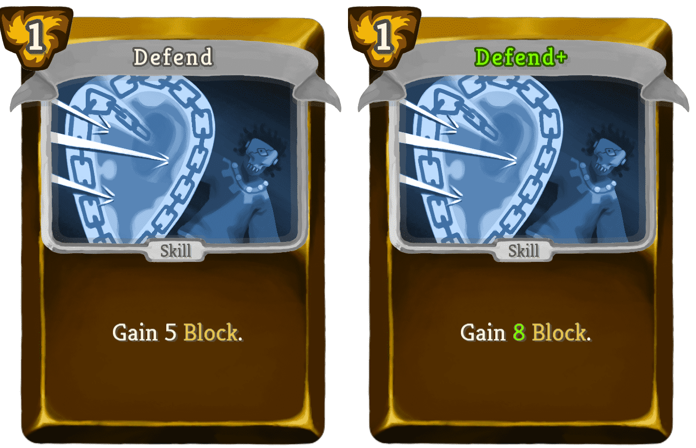 | Basic | Skill | 1 | Gain 5 (8) Block. |
| Defensive Link |  | Basic | Skill | 2 | Gain 9 (13) Block. Reduce the cost of a card in your hand by 1 this turn. |
| Strike |  | Basic | Attack | 1 | Deal 6 (9) damage. |
| Whiplash |  | Basic | Attack | 1 (0) | Deal 4 damage. 1 theunchainedmod:Chain: Enemy loses 8 HP. |
| Arcane Strike |  | Common | Attack | 1 | Deal 3 (4) damage twice. Gain 6 (8) theunchainedmod:Relay. |
| Cocoon | 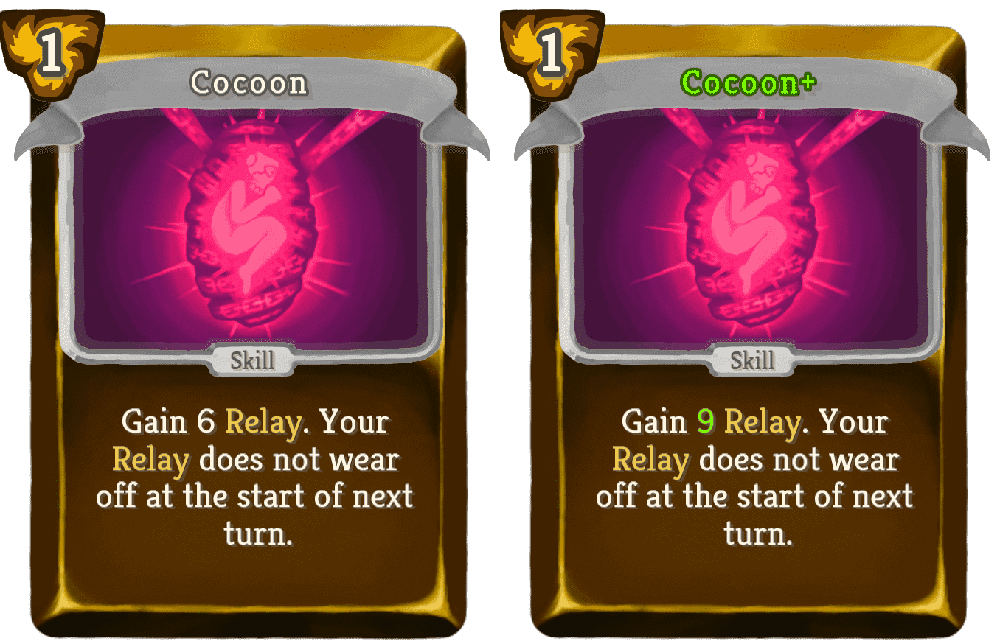 | Common | Skill | 1 | Gain 6 (9) theunchainedmod:Relay. Your theunchainedmod:Relay does not wear off at the start of next turn. |
| Double Down | 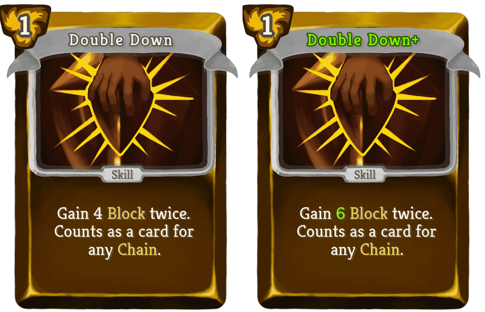 | Common | Skill | 1 | Gain 4 (6) Block twice. Counts as a card for any theunchainedmod:Chain. |
| Dual Barrier |  | Common | Skill | 1 | Gain 4 (6) Block. Gain 8 (10) theunchainedmod:Relay. |
| Glyph Swing |  | Common | Attack | 1 | Deal 6 (8) damage. Remove up to 8 (12) theunchainedmod:Relayed_Damage and deal damage equal to the amount you removed. |
| Grasp Future |  | Common | Attack | 1 | Deal 9 (12) damage. Put 1 card from your draw pile on top of your draw pile. |
| Heavy Hitter |  | Common | Skill | 1 | Gain 3 (5) temporary Strength. Whenever you hit an enemy this turn, apply 2 (3) theunchainedmod:Crushed_Armor. |
| Keep Distance |  | Common | Skill | 1 | Gain 9 (12) Block. Enemy gains 9 (12) Block. |
| Lash Out |  | Common | Attack | 2 | Deal 13 (17) damage. 1 theunchainedmod:Chain: Gain [E]. |
| Liberation |  | Common | Skill | 1 | Gain 7 (10) Block. Finish ALL your active theunchainedmod:Chains. Remove ALL theunchainedmod:Relayed_Damage. Exhaust. |
| Offhanded Swing |  | Common | Attack | 1 | Deal 7 (10) damage. Draw 1 card, if it is a 2-cost card play it on the same enemy if possible. |
| Prophetic Swing |  | Common | Attack | 1 | Deal 10 (13) damage to a random enemy. Scry 3 (4). |
| Reckless Swing | 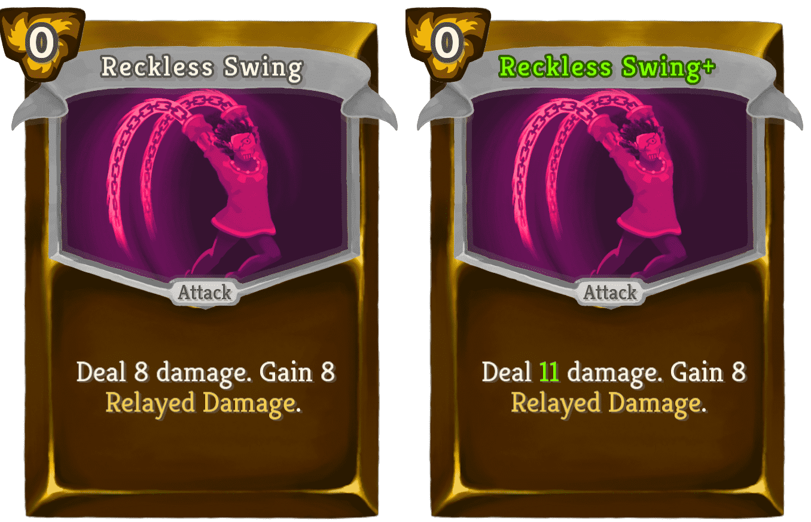 | Common | Attack | 0 | Deal 8 (11) damage. Gain 8 theunchainedmod:Relayed_Damage. |
| Riposte |  | Common | Attack | 1 | Gain 5 (7) Block. Deal 5 (7) damage. Gain 1 theunchainedmod:Momentum. |
| Single Out |  | Common | Attack | 1 | Deal 11 (15) damage. A random enemy gains 3 (4) Block. |
| Step Back |  | Common | Skill | 1 | Draw 1 (2) card(s). 1 theunchainedmod:Chain: Gain 9 Block. |
| Wide Swing |  | Common | Attack | 0 | Deal 7 (10) damage to ALL enemies. If you have an active theunchainedmod:Chain end your turn. |
| À Plomb |  | Common | Skill | 1 | Gain 6 (9) Block. Gain 1 theunchainedmod:Momentum. Next Turn, gain 1 theunchainedmod:Momentum. |
| Arcane Transmutation |  | Uncommon | Power | 1 | Whenever an enemy gains Block, gain 4 (5) theunchainedmod:Relay. |
| Baguazhang |  | Uncommon | Skill | 1 | Gain 5 Block. Enemy gains 5 Block. If the enemy intends to do less than 10 damage (per hit), gain 10 (15) Block. |
| Ballet | 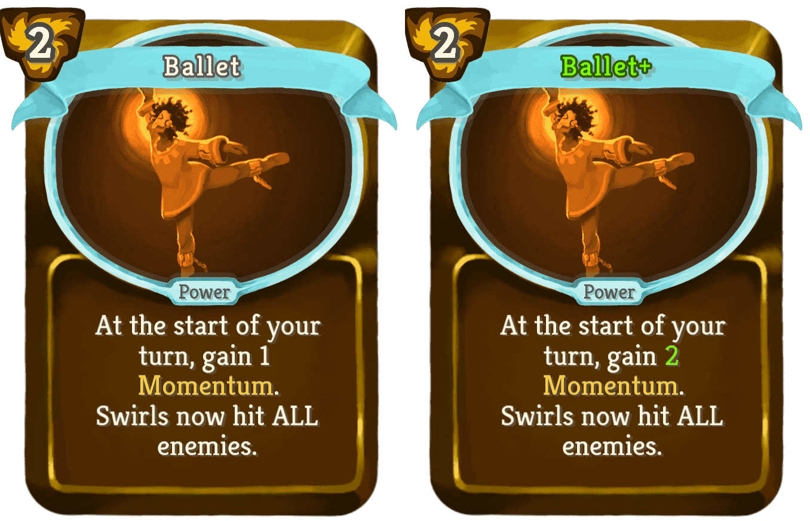 | Uncommon | Power | 2 | At the start of your turn, gain 1 (2) theunchainedmod:Momentum. Swirls now hit ALL enemies. |
| Battement |  | Uncommon | Attack | 2 | Deal 14 (18) damage. Gain 2 (3) theunchainedmod:Momentum. |
| Burnish |  | Uncommon | Skill | 1 (0) | Exhaust a card. Gain theunchainedmod:Momentum equal to double its cost. |
| Ceasefire |  | Uncommon | Skill | 1 | Double your theunchainedmod:Relay. Double the Block of ALL enemies. Exhaust. (not Exhaust.) |
| Claustrophobia | 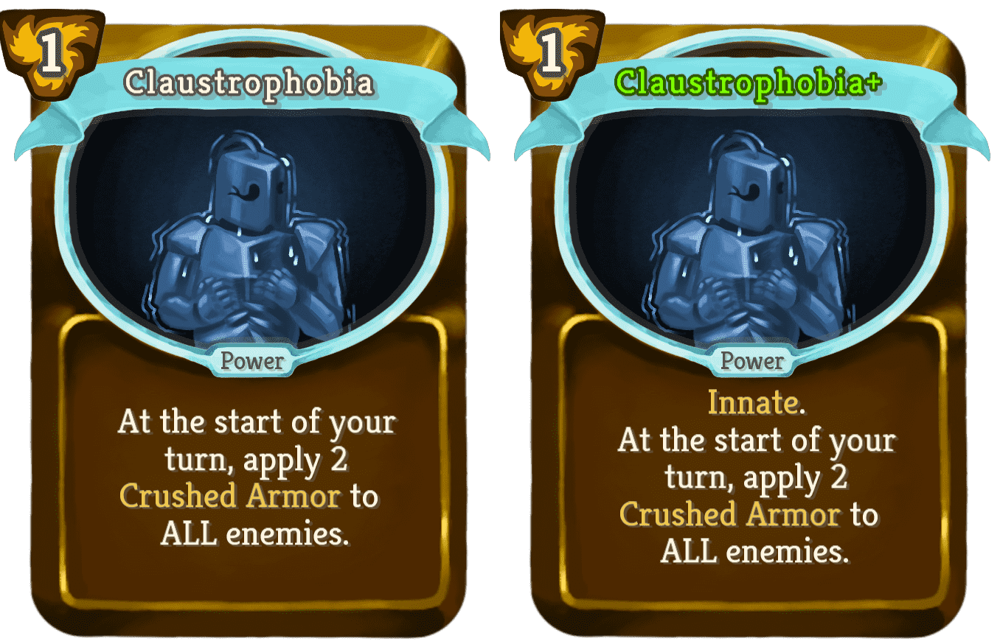 | Uncommon | Power | 1 | (Innate.)At the start of your turn, apply 2 theunchainedmod:Crushed_Armor to ALL enemies. |
| Cripple | 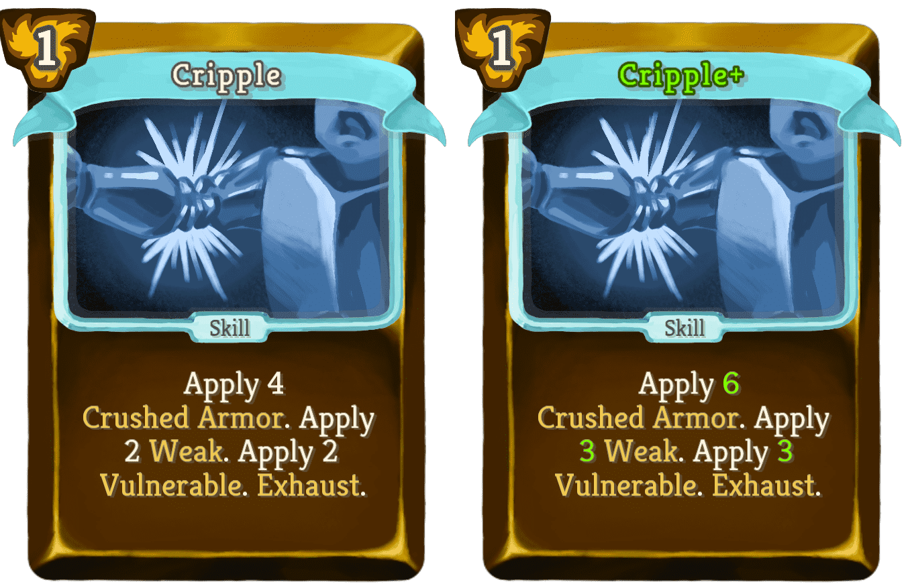 | Uncommon | Skill | 1 | Apply 4 (6) theunchainedmod:Crushed_Armor. Apply 2 (3) Weak. Apply 2 (3) Vulnerable. Exhaust. |
| Cruiserweight | 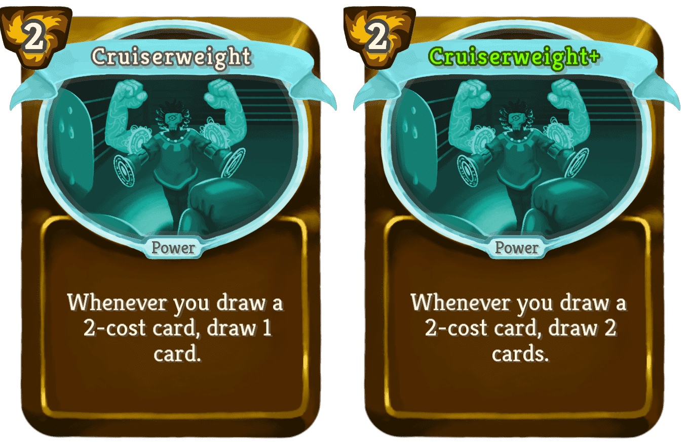 | Uncommon | Power | 2 | Whenever you draw a 2-cost card, draw 1 (2) card(s). |
| Cuff |  | Uncommon | Attack | 1 | Innate. Deal 3 damage. Apply 1 (2) Weak. 2 theunchainedmod:Chain: Enemy loses 2 (3) Strength. Exhaust. |
| Eye For An Eye |  | Uncommon | Skill | 1 | Gain 5 Vigor. Remove up to 10 (15) theunchainedmod:Relayed_Damage. Gain Vigor equal to the amount you removed. |
| Fractal Shield |  | Uncommon | Power | 1 | Gain 6 (10) theunchainedmod:Relay. theunchainedmod:Relay now blocks theunchainedmod:Relayed_Damage. |
| Full Swing |  | Uncommon | Attack | 1 | Deal 5 (7) damage. Deal 5 (7) damage to ALL enemies. |
| Guarded Posture |  | Uncommon | Power | 1 | Whenever you finish a Chain, gain 3 (4) Block. |
| Heartfelt Speech |  | Uncommon | Skill | 0 | Gain 2 Vulnerable. 2 (1) theunchainedmod:Chain: Gain 1 Intangible. Exhaust. |
| Immovable Object |  | Uncommon | Skill | 2 | Gain 11 (13) Block. Whenever you are attacked this turn, the attacking enemy gains 4 (5) theunchainedmod:Crushed_Armor. |
| Keep Swinging |  | Uncommon | Power | 1 | All Cards with "Swing" in their name deal 4 (6) additional damage. |
| Masterwork Glyph |  | Uncommon | Skill | 1 | Gain 9 (11) theunchainedmod:Relay. If you do not have Block, gain 9 (11) theunchainedmod:Relay again. |
| Overexertion |  | Uncommon | Skill | 0 | Gain [E] [E] ([E]). Gain 14 theunchainedmod:Relayed_Damage. Exhaust. |
| Premonition |  | Uncommon | Skill | 1 | Gain 6 (8) Block. If you have spent ALL your [E] at the end of this turn, gain (NL) [E] [E] ([E]) next turn. |
| Prophecy |  | Uncommon | Skill | 2 | Copy a card in your hand (twice) and put the copy (both copies) on top of your draw pile. Exhaust. |
| Quick Swing |  | Uncommon | Attack | 1 | Deal 8 (10) damage. 1 theunchainedmod:Chain: Draw 2 (3) cards. |
| Razor Chain |  | Uncommon | Attack | 1 | Enemy loses 10 (15) HP. HP loss is affected by theunchainedmod:Damage_Modifiers. |
| Refresh |  | Uncommon | Skill | 2 | Gain 14 (18) theunchainedmod:Relay. Lose up to 14 (18) theunchainedmod:Relayed_Damage and gain Block equal to the amount you removed. |
| Reinforced Link |  | Uncommon | Skill | 1 | Gain 4 (6) Block. If you have an active theunchainedmod:Chain, gain [E] and draw 1 card. |
| Royal Assessment | 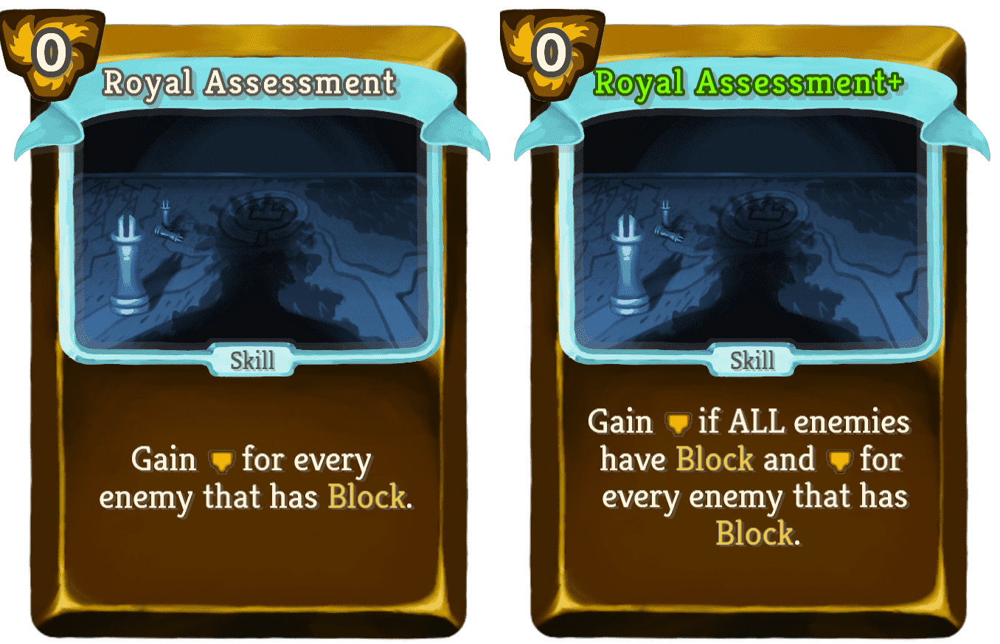 | Uncommon | Skill | 0 | Gain [E] (if ALL enemies have Block and [E]) for every enemy that has Block. |
| Royal Decree |  | Uncommon | Skill | 1 (0) | Add a random 2-cost card into your hand. It costs 0 this turn and exhausts. |
| Share Pain |  | Uncommon | Attack | 2 | (Retain.)Deal 0 damage. Damage is equal to ALL theunchainedmod:Relayed_Damage you have gained this combat. |
| Stare Down |  | Uncommon | Skill | 0 | Gain 2 (3) temporary Dexterity. 1 theunchainedmod:Chain: Apply 1 (2) Weak to ALL enemies. |
| Suffocate |  | Uncommon | Skill | 1 (0) | Gain Block equal to the enemies Block. Enemy loses HP equal to their Block. |
| Telekinetic Pulse |  | Uncommon | Skill | 2 | ALL enemies gain 7 (10) Block. 2 theunchainedmod:Chain: ALL enemies lose 25 (31) HP. |
| Tie Down |  | Uncommon | Skill | 1 | Enemy loses 6 (8) Strength this and next turn. Exhaust. |
| Trade Offer |  | Uncommon | Skill | 0 | Enemy gains 6 (12) Block. Draw 1 (2) card(s). |
| Windup | 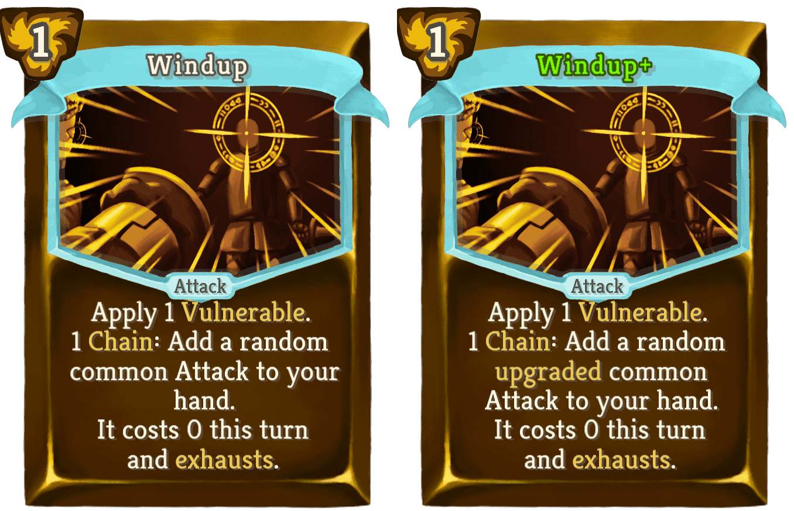 | Uncommon | Attack | 1 | Apply 1 Vulnerable. 1 theunchainedmod:Chain: Add a random (upgraded) common Attack to your hand. It costs 0 this turn and exhausts. |
| Arcane Charm |  | Rare | Power | 2 | At the start of your turn, gain 7 (10) theunchainedmod:Relay. |
| Chain Saw |  | Rare | Attack | 1 | Delete ALL your active theunchainedmod:Chains. Increase this card's damage by 5 (10) for every theunchainedmod:Chain deleted this combat. Deal 15 damage. |
| Chase Destiny | 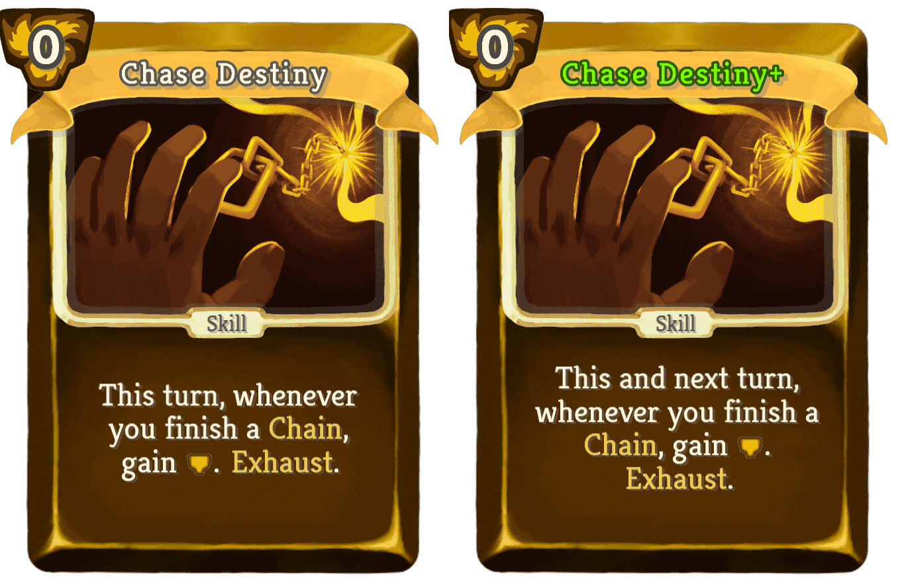 | Rare | Skill | 0 | This (and next) turn, whenever you finish a theunchainedmod:Chain, gain [E]. Exhaust. |
| Fouetté En Tournant | 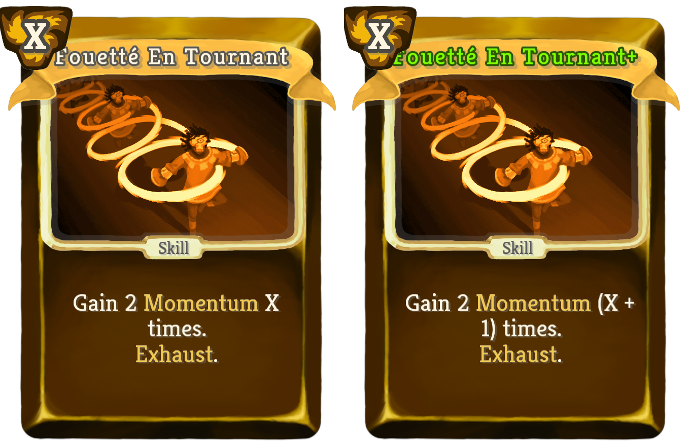 | Rare | Skill | X | Gain 2 theunchainedmod:Momentum X ((X + 1)) times. Exhaust. |
| Glyph Beam |  | Rare | Attack | 1 | Deal 9 (12) damage. Whenever you gain theunchainedmod:Relay this turn, the enemy takes 9 (12) damage. |
| Kusarigama |  | Rare | Attack | 2 | Can only be played if it finishes an Attack theunchainedmod:Chain. Deal 30 (36) damage to ALL enemies. |
| Last Resort |  | Rare | Skill | 0 | Draw 3 cards. Gain [E] [E]. 2 (3) theunchainedmod:Chain: Lose ALL your [E]. Exhaust. |
| Law Of Inertia |  | Rare | Power | 3 | The first time you finish a theunchainedmod:Chain each turn, gain 2 (3) Strength and Dexterity. If you did not finish a theunchainedmod:Chain by the end of turn, lose 2 (3) Strength and Dexterity. |
| Magus Form | 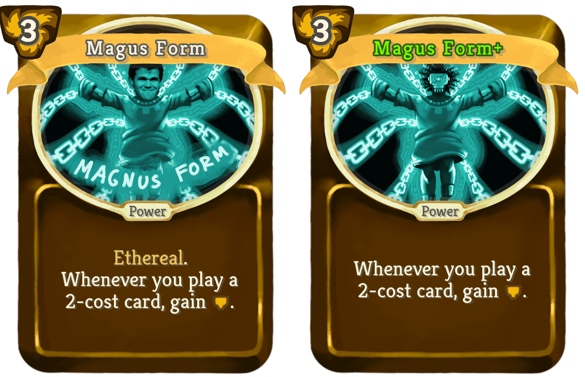 | Rare | Power | 3 | Ethereal. (not Ethereal.) Whenever you play a 2-cost card, gain [E]. |
| Muscle Memory |  | Rare | Skill | 1 | This turn, your next (2) 2-cost card(s) is (are) played twice. |
| Pirouette |  | Rare | Skill | 1 (0) | Add a Swirl into your hand. Upgrade ALL Swirls in your hand. Exhaust. |
| Relentless Movements |  | Rare | Power | 1 | Finishing a theunchainedmod:Chain gives 1 (2) theunchainedmod:Momentum. |
| Relentless Onslaught | 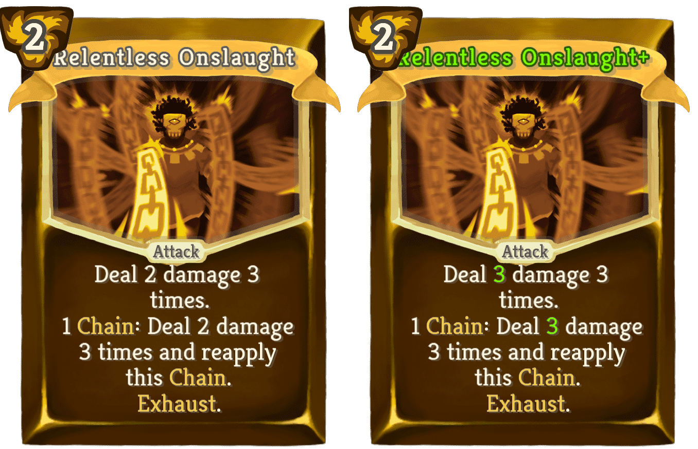 | Rare | Attack | 2 | Deal 2 (3) damage 3 times. 1 theunchainedmod:Chain: Deal 2 (3) damage 3 times and reapply this theunchainedmod:Chain. Exhaust. |
| Solar Plexus |  | Rare | Attack | 0 | Deal 5 (7) damage. 3 (2) theunchainedmod:Chain: theunchainedmod:Stun the same enemy. Exhaust. |
| Taxes |  | Rare | Power | 2 | Rightfully acquire 15 (20) Gold from every enemy. |
| Tethered Mind | 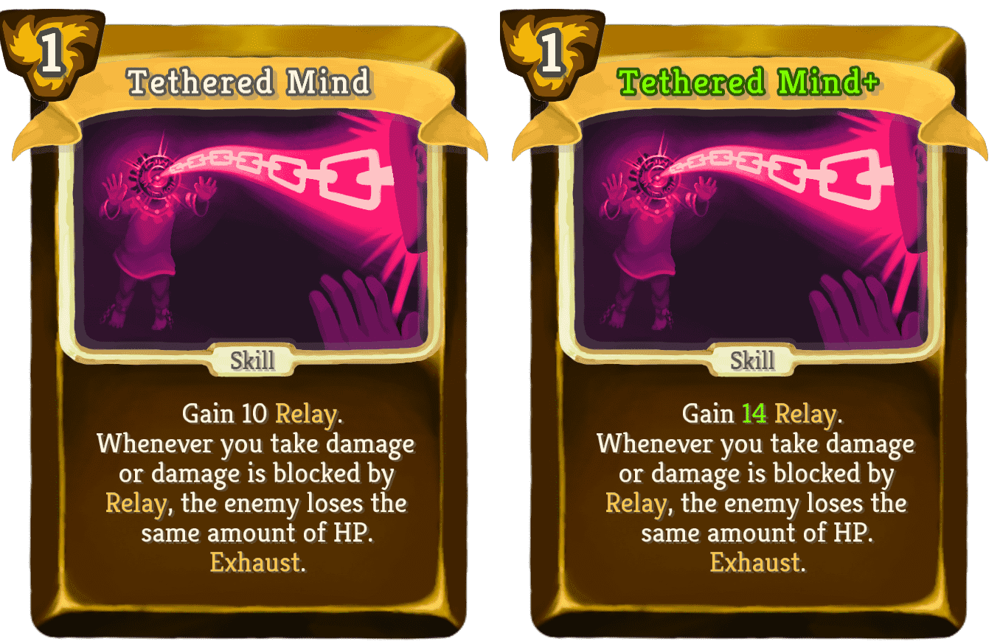 | Rare | Skill | 1 | Gain 10 (14) theunchainedmod:Relay. Whenever you take damage or damage is blocked by theunchainedmod:Relay, the enemy loses the same amount of HP. Exhaust. |
| The Prince's Grace |  | Rare | Power | 2 | At the start of turn, draw 1 (2) additional cards. All enemies gain 6 (10) Block every turn. |
| Thread Of Ariadne |  | Rare | Skill | 2 (1) | If you have an active Chain, take an extra turn after this turn. End your turn. Exhaust. |
| Unshackling |  | Rare | Power | 0 | (Innate.)Whenever you play a card, Upgrade it for the rest of combat. |
| Name | Image | Tier | Pool | Description | Flavor |
|---|
| Rusted Chains |  | Starter | Unchained_orange_color | The seventh card you play each combat costs zero. | These used to hold you to a prison wall. Now they are handy tools. |
| Broken Charm | 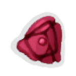 | Common | Unchained_orange_color | At the start of your first 3 turns, gain 5 Relay. | Ringing it doesnt make the most pleasant of sounds, but it has emotional value. |
| Ballet Shoes |  | Uncommon | Unchained_orange_color | The Momentum required for the next Swirl is always one less. | Impossible to strike a bad pose with these. |
| Heart of the Underdog |  | Uncommon | Unchained_orange_color | At the end of turn, gain 1 Strength if you do not have more block than ALL enemies combined. | You feel it beat stronger whenever the odds are stacked against you. |
| Totem Of Pain |  | Uncommon | Unchained_orange_color | At the end of your turn, hit a random enemy for ALL Relayed Damage you gained since last turn. | When you listen close, you can hear the demon whisper: 'Sharing is caring'. |
| Wrench |  | Uncommon | Unchained_orange_color | Whenever you apply Crushed Armor, the enemy loses 4 HP. | You can never fasten your armor tight enough. |
| Carabiner |  | Rare | Unchained_orange_color | Chains no longer wear off at the end of turn. | There is no better tool for connecting chains. |
| Churros |  | Rare | Unchained_orange_color | Every 7th Chain you start is copied. | These tasty treats fill you with a burst of energy. |
| Memento |  | Boss | Unchained_orange_color | The first time you attack an enemy with block each turn, gain [E] . | The demon awakens when the tide of battle turns. |
| Polished Chains |  | Boss | Unchained_orange_color | Replaces RustedChains. EVERY seventh card you play each combat costs zero. | You can see your own reflection in these. |
{kind=link}
{kind=link}
{kind=link}
{kind=link}
{kind=link}
{kind=link}
{kind=link}
{kind=link}
{kind=link}
{kind=link}
{kind=link}
{kind=link}
{kind=link}
{kind=link}
{kind=link}